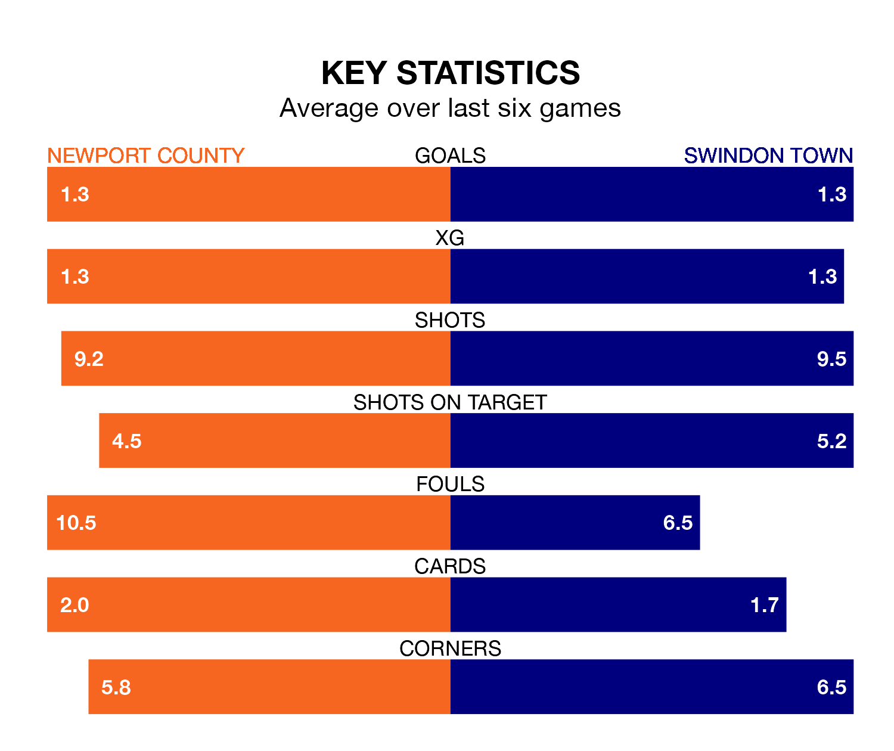

Newport County face Swindon Town on Saturday seeking to protect their long unbeaten run in EFL League Two.
The Exiles are unbeaten in five, with three wins and two draws, ahead of the 12.45pm kick-off.
They face a Swindon team who have won two and drawn one over the same number of games.
With 52 goals in 29 games so far this season, Swindon are scoring more than average in the league with 1.8 goals per game. But they are conceding more than average too, letting in 54 goals at a rate of 1.9 per game.
Newport, meanwhile, are below average scorers, with 1.4 goals per game, compared to a league average of 1.5. They have conceded 1.6 goals per game.
In the last 10 years, Newport and Swindon have played each other on 14 occasions. Newport won six of them, Swindon seven, and they drew once.
On average, the Exiles scored 0.9 goals and the Robins 0.9 in those matches.
Their last meeting was on October 14, when Swindon won 2-0 at home.
In Jake Young, Town have one of the league's most on-form strikers so far this season. He has notched 16 goals in 26 appearances, to sit third in the scoring charts.
His goal rate of one every 125 minutes is quicker than that of Will Evans, County's top scorer with a goal every 154 minutes, and a total of 15 goals in 28 games.
The Exiles are 16th in the table after 28 games, of which they have won 10 and drawn seven, earning 37 points.
The Robins are two places ahead of the home side in 14th, with 10 wins and seven draws putting them on the same number of points.
Newport's last match was on January 20, a 1-0 win against Wrexham, with Sebastian Palmer-Houlden getting the goal for the Exiles.
Swindon beat Bradford City 2-0 last time out, on Saturday, with Charlie Austin and Dawson Devoy on the scoresheet.
Updated: 10:03 (UTC), 30/01/24